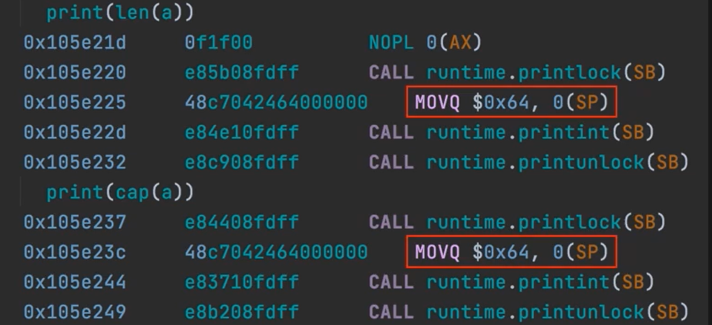
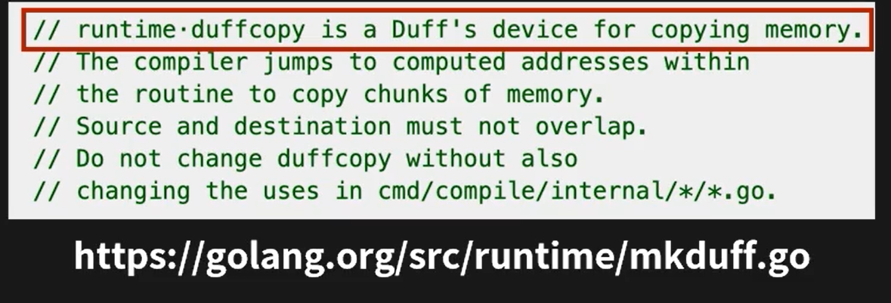
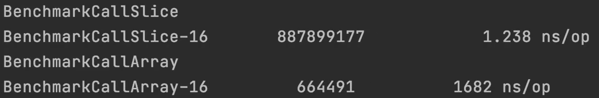

Slice 的底层结构 副本¶
Slice和Array对比¶
slice：
var s []int
s := make([]int,len,cap)
array：
var a [length] int
对比一下切片和数组的定义方式，很明显可以看出，array在定义的过程中指定了length长度，而slice并没有。这说明，slice是可以动态的进行扩容和缩容。
Slice细节¶
slice 的结构体定义:
type slice struct{
array unsafe.Pointer
len int //长度
cap int //容量
}
来看以下程序：
package main
func printSlice(s []int){
print(len(s))
print(cap(s))
}
func printArray(a [100]int){
print(len{a})
print(cap(a))
}
func main(){
s := make([]int,100)
printSlice(s)
var a[100]int
printArray(a)
}
运行结果：

我们可以通过查看汇编代码的方式来该段代码的内容。
PrintSlice函数¶

当我们看到类似红框中的一个数字后面跟着一个括号，括号里面是一个寄存器，这里只需要知道这是去内存地址中取值了就可以，其他的就当作英语的本意看就可以了。
第一行代码，就是从内存地址中取出来一个值，挪到了新的函数栈上，并且调用了printint方法。这时候，就可以看出来，针对Slice来说，它的长度以及它的容量其实是一个变量。
PrintArray函数¶

查看红框中的部分，和Slice红框中对比，他变成了0x64，0x64是汇编语言中的常量，翻译成十进制就是100。实际上这行代码的意思就是，把一个常量move到了一个函数调用栈上面。所以针对array来说，这个长度在定义了之后是不可以改变的。
Slice和Array在函数传参上的区别¶

红框部分可以注意到，这两句就是指向array的porinter 放到了栈上实际上在函数传参的时候，slice传的是它底层的结构体。

duffcooy从内存中copy->值传递

如果在go里面传递数组会怎么样呢？
写了两个benchmark：
func callSlice(s []int){
}
func BenchmarkCallSlice(b *testing.B){
s := make([]int,10000)
for i := 0;i < b.N; i++{
callSlice(s)
}
}
func callArray(a [10000]int){
}
func BenchmarkCallSlice(b *testing.B){
var a [10000]int
for i : =0;i < b.N; i++{
callArray(a)
}
}

结论：传递数组的开销太大
面试题： 为什么go中会有数组?
1. 具有可比性意味着您可以将数组用作地图中的键，但不能用作切片。常见问题解答：为什么地图不允许切片作为键？
2. 数组可以提供更高的编译时安全性。
3. 同样， 传递或分配数组值也将隐式创建 整个数组 的副本 ，因此它将与原始值“分离”。如果您传递一个切片，它将仍然仅复制切片标头，但切片值（标头）将指向相同的后备数组。这可能是您想要的，也可能不是。如果要从“原始”切片“分离”切片，则必须显式复制内容，例如使用内置copy()函数复制到新切片。
4. 同样，由于数组长度是数组类型的一部分，所以 长度不同的数组是不同的类型。一方面，这可能是“痛苦中的事情”（例如，编写一个带有类型参数的函数[4]int，您不能使用该函数来处理和处理类型数组[5]int），但这也可能是一个优势：可以用于显式指定 所需数组 的长度。例如，您想编写一个使用IPv4地址的函数，可以使用type对其进行建模[4]byte。现在，您有了编译时的保证，即传递给您的函数的值将恰好具有4个字节，不多也不少（无论如何这都是无效的IPv4地址）。
5. 与之前的内容有关， 数组长度也可以用于记录目的。类型[4]byte正确记录了IPv4有4个字节。一个rgb类型的可变[3]byte告诉有对每个颜色成分1个字节。在某些情况下，甚至可以将其取出并单独记录；例如在crypto/md5包中：md5.Sum()返回类型为的值，[Size]byte其中md5.Size一个常数为16：MD5校验和的长度。
6. 在 计划结构类型的内存布局时，它们也非常有用，请参阅此处的JimB答案，以及更多详细信息和实际示例。
7. 同样，由于切片是标头，并且它们（几乎）总是按原样传递（没有指针）， 因此语言规范对切片的指针比对数组的指针更具限制性。例如，规范提供了多个用于操作数组指针的简写，而在切片时会给出编译时错误（因为很少使用指向切片的指针，如果仍然需要/必须这样做，则必须明确处理。）
这样的例子是：
- 分割p指向array：的指针p[low:high]是的简写(*p)[low:high]。如果p是指向slice的指针，则为编译时错误（规范：slice表达式）。
- 索引p数组指针：p[i]是的简写(*p)[i]。如果pis是指向切片的指针，则这是编译时错误（规范：Index expressions）。
8. 访问（单个）数组元素 比访问切片元素 更有效 ；像分片一样，运行时必须经过隐式指针取消引用。另外， “如果表达式的类型是数组或指向数组的指针，则表达式__len(s)__和__cap(s)__为常量__s__”。
总结¶
1. Go中只有值传递，指针也是值的一种。
2. array因为是固定长度，其占用的内存大小编译期就可以确定，因此可以分配到栈上，其通过函数调用传递的时候，是需要复制完整的array的，而slice因为是动态数据结构，只有（pointer,len,cap）这个结构才是固定的，这些在函数传递slice中会被拷贝。
3. Go语言汇编可以看到完整函数调用等完整实现细节，其写法类似AT&T风格，传递是从左到右。
更新: 2022-10-13 14:19:38
原文: https://www.yuque.com/xiaoshan_wgo/codingnotes/ita7tg